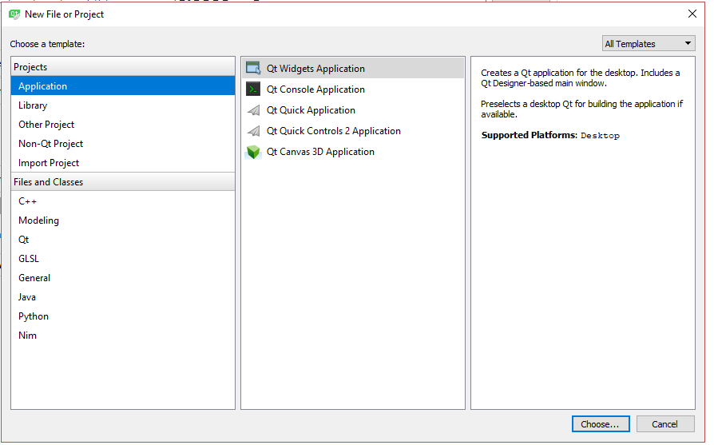

一、下载安装（Qt是什么就不用我说了 自行百度咯
1. 官网下载
开始我以为下载qtcreator就是下载了qt,然后发现居然下载qtcreator只是一个空壳，下载qt自带一个qtceator,折腾了老半天，嘤嘤嘤，所以下面地址是直接下载qt的
http://download.qt.io/official_releases/qt/
我下载的是qt-opensource-windows-x86-5.9.0.exe
2. 安装
一路安装下去，此地无账号可以注册一个，为免费的开源版本
组件的选择，按需求下，以下是根据《Qt 5.9 C++开发指南》实例下载，这本书还是不错的
3.一些小小的设置
设置部分都在Tools->options，里面有基本上所有的设置包括中文，但是非常不建议中文（你试试就知道了
在buiud&run里面可以看到现在的编辑器，当前主要在使用Qt 5.9.0 MinGW 32bit
字体风格啥的就自己去瞅瞅就行了
二、编译一个Hello Kitty
1. 新建一个项目
选择左上角的FIle->New File or Project
这里选择第一个即可

然后Kit可以随意选择一个或者多个，会自动检测qt已经具备的Kit,当然全选也可以，反正玩玩而已
2. 项目文件结构

总结一下常见文件目录的作用
- Headers
指定项目中所有的头文件。 - FORMS
指定UI文件在编译前被uic处理。所有的构建这些UI文件所需的依赖、头文件和源文件都会自动被添加到项目中。 - CONFIG
指定编译器选项和项目配置，值由qmake内部识别并具有特殊意义。 - LIBS
指定链接到项目中的库列表。如果使用Unix -l (library) 和 -L (library path) 标志，在Windows上qmake正确处理库（也就是说，将库的完整路径传递给链接器），库必须存在，qmake会寻找-l指定的库所在的目录。 - SOURCES
指定项目中所有源文件。
3.Design
qtcreator具备可视化编辑ui,双击mainwindow.ui即进入左侧任务栏中的Design
在左侧拉一个Display Widgets->Label 进去即可
三、编译以及打包
1. 编译，选择Qt 5.9.0 MinGW 32bit(不是强制，可自选)，为了打包所以选择Release
点击第二个（非debug,即可编译运行，然后会在源代码的文件夹出现一个build-XX的文件目录
找到里面的release->hello.exe 双击运行会提示少一大堆.dll,所以要打包
2. 自动打包
Qt 官方开发环境使用的动态链接库方式，在发布生成的exe程序时，需要复制一大堆 dll，如果自己去复制dll，很可能丢三落四，导致exe在别的电脑里无法正常运行。
因此 Qt 官方开发环境里自带了一个工具：windeployqt.exe。
这个工具在该编译器所在的bin目录下，是一个终端操作工具
你只需要把release目录下的hello.exe复制到bin目录下 cmd输入 windeployqt.exe hello.exe即可，但是这个会导致你的bin目录非常恶心
所以直接，新建一个目录，里面放一个从Releasee复制出来的hello.exe,cmd切到hello.exe目录下然后（只要一个hello.exe即可）
{你自己的Qt安装路径}\Qt\5.9\mingw53_32\bin\windeployqt.exe hello.exe或者先把该编译器的bin目录放在环境变量中
windeployqt.exe hello.exe
然后hello.exe 文件夹下会出现一堆依赖文件，即可帮助你运行hello.exe
3.可能遇到的问题
windeployqt.exe的作用其实也就是简单把项目需要的的dll从bin目录下复制出来，所以如果在打包之后运行还提示缺少了什么.dll文件，直接去编译器的bin目录下复制过来即可。